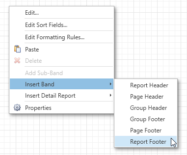

Calculating Summaries
With the Report Designer, you can force a data-bound control to calculate one of the standard summary functions (Average, Sum, Count, Max, Min, etc.).
To calculate summaries (totals) within a report, follow the instructions below.
Create a new report and bind it to a data source. This tutorial starts with the following report layout.

To display a summary at the bottom of the report, add the Report Footer band. To do this, right-click the report's area and in the invoked context menu, select Insert Band, and then Report Footer.

Switch to the Field List panel, select the field for which a summary will be calculated and drop it onto the created Report Footer band.

Right-click the newly created Label and select Edit... in the context menu. In the invoked dialog, click the ellipsis button for the Summary property.
In the invoked Summary Editor, specify the summary options. In the Summary function drop-down, select Sum. Note that in addition to a simple summary, you can choose among numerous built-in functions (such as Count and Average).
The Summary Running option is set to Report to ensure that all values from the specified data field are taken into account. You can also define a summary function's Format string. Note that value formatting is applied to a summary independent of general formatting and has a greater priority.
The Ignore NULL values option would not affect the result in this example, since NULL values are treated like zeros by default. This option makes sense for functions like Count or Average, because the number of elements counted will depend on this option.

To save the settings and close the dialog, click OK.
Switch your report to the Print Preview tab to view the result.